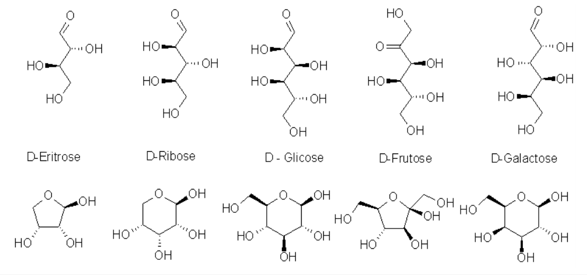
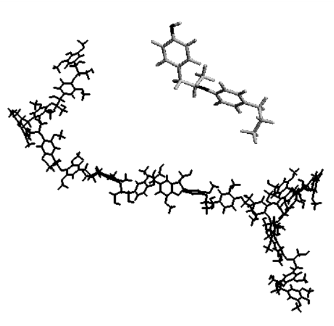

7 Carboidratos
7.1 Introdução
Os carboidratos constituem, a grosso modo, os açúcares existentes na Natureza. Fazem parte desse grupo o açúcar de cozinha, a frutose dos cítricos, o amido da batata, a celulose do lenho, o glicogênio dos músculos, a estrutura da parede celular de bactérias, as estruturas de identificação de tipagem sanguínea, etc.
Como se pode perceber, os carboidratos exibem funções bastante distintas. Assim como as proteínas são formadas por aminoácidos, e se distinguem umas das outras pelo número e qualidade desses aminoácidos, os carboidratos também se distinguem uns dos outros pelo número e qualidade de sua unidade básica. Entretanto, a unidade básica dos carboidratos é bem mais simples estruturalmente do que a das proteínas. Essa unidade nada mais é do que uma função álcool.
Estruturalmente falando, os carboidratos diferem entre si pelo número e posição de -C-OH que possuem. A parte curiosa é que um carboidrato pode possuir o mesmo número de -C-OH que outro, mas ainda assim diferenciar-se daquele pela posição de uma única hidroxila. Ou seja, um carboidrato pode apresentar um -C-OH numa posição, enquanto que outro carboidrato pode apresentar um HO-C- na mesma posição. Além disso, duas funções orgânicas principais podem variar entre os carboidratos, a função aldeído e a função cetona, que aparece na “cabeça” do carboidrato, e que permite definir sua reatividades química e nomenclatura.
Por tudo isso pode-se afirmar com certeza que a variabilidade existente no universo dos carboidratos é ainda maior do que a das proteínas. Variabilidade confere funcionalidade, e isto justifica o grande espectro de ações realizadas pelos carboidratos. Assim como nas proteínas, os carboidratos podem variar em tamanho. De 3 carbonos, como o gliceraldeído, a centenas de milhares, como alguns açúcares sintetizados por microorganismos.
7.2 Detalhes
Carboidratos são biomoléculas essencialmente formadas por hidratos de carbono de representação (CH2O)n, onde n representa o número de carbonos da molécula (n>=3).

Quimicamente podem se apresentar como cetoses (ribulose, frutose) ou aldoses (ribose, glicose) de alta reatividade química, devido à presença de grupos carbonila e de grande número de grupos OH em sua estrutura. Isso permite uma oxidação à COOH na extremidade final, formando ácido urônico (glicurônico ou pontes O e N-glicosídicas de glicosaminoglicanos), reduções em C-1 (formando polióis, como o sorbitol e o galactitol), oxidações em C-1 (formando ácido aldônico, da composição de lactonas), ou reduções em C-n (formando glicosídios e glicosaminas - parede bacteriana, quitina, alcalóides).

Carboidratos apresentam atividade óptica (em animais e plantas, D-carboidratos, diferente dos L-aminoácidos dos animais), com vários isômeros estruturais. Carboidratos podem ser ramificados, não realizam catálise química nem possuem molde genético. No entanto, devido à grande heterogeneidade nos números de carbono (de 3 a milhares; mono, di, oligo e polissacarídios), tipos de ligação glicosídica (O-ligações, entre carbonos de monômeros distintos; ex: 1,2; 1,4, etc), configurações do carbono anomérico (se alfa, para baixo, ou beta, para cima), e linearidade de ramificações, os carboidratos são as biomoléculas que mais apresentam variabilidade estrutural e, portanto, informação biológica.
Essa informação estabelece funções estruturais (celulose, glicosaminoglicanos, proteoglicanos, ácidos nucléicos), de reserva energética (ATP, amido, glicogênio, glicose), e de reconhecimento e adesão celular (lectinas, selectinas, ácido siálico de glicoproteínas) para os carboidratos.
Apenas 1% dos carboidratos encontra-se em solução na representação linear da Figura 7.1 (fórmula de Fisher), estando a grande maioria em equilíbrio entre esta e a forma fechada (anel em cadeira ou barco, 99%, representação de Haworth). Esta permite um OH livre terminal, denominado carbono anomérico, o qual pode estar acima do plano do papel (beta) ou abaixo do mesmo (alfa), e responsável pelas ligações apresentadas pelos oligo e polissacarídios.

Esses últimos, geralmente formados por uniões de glicose, como a celulose (\(\beta\)-1,4), o amido (\(\alpha\)-1,4 e \(\alpha\)-1,6 nas ramificações - a cada 30 resíduos) e o glicogênio (\(\alpha\)-1,4 e \(\alpha\)-1,6 nas ramificações - a cada 10 resíduos), possuem diferenças estruturais apenas naquelas ligações. Essa diferença permite que ruminantes possam degradar a celulose, por possuirem enzimas adequadas (microorganismos ruminais), e monogásticos não.
A digestão de polissacarídios se inicia na boca (amilase salivar), prossegue no tubo digestivo para quebra de oligossacarídios (amilase pancreática e enzimas desramificadoras), seguindo uma absorção de mono e dissacarídios no lúmen intestinal. A forma polimérica de estocagem de glicose para uso energético permite uma menor osmolaridade quando comparada à forma monomérica (cada molécula de amido pode conter até 106 glicoses), incompatível à vida.
A quitina, do exoesqueleto de crustáceos e insetos, é formada por polímeros de glicose com N-acetilglicosamina ligada. A hemicelulose é formada pela celulose ligada à lignina, um polifenol do lenho vegetal. A extremidade OH livre do carbono anomérico também permite algumas reações de redução sobre metais (açúcares redutores), produzindo compostos cromáticos que identificam o tipo de açúcar envolvido na reação (reação de Fehling ou de Benedict). A Figura 7.4 mostra diferenças estruturais entre os polímeros de celulose e quitina.

Glicosaminoglicanos são polissacarídios aniônicos (SO4\(^{-2}\)) aminados não-ramificados, presentes nos líquidos sinoviais (articulações e cartilagem), humor vítreo e sêmen, e formados por unidades alternantes de ácido urônico e hexosaminas. (ex: ácido hialurônico, 250 mil unidades). Devido à característica de compressão/dilatação, permitem expulsão de água e controle da viscosidade local. Quando se agrupam em torno de peptídios e proteínas, formam os proteoglicanos, com mais de 90% de hidratos de carbono em sua composição. Glicoproteínas, por sua vez, estão melhor endereçadas para reconhecimento celular (tumor, infeção bacteriana, adesão celular, inibição por contato, destino de lisossomos, sistema ABO sanguíneo).
Estruturalmente, são constituidos por uma grande proteína ligada a alguns oligossacarídios de glicose, manose e glicosaminas.
7.3 Aplicação
Existe pouco carboidrato livre nos solos (a quase totalidade formada por glicose, frutose e sacarose), estando a maioria adsorvida à argila por pontes de hidrogênio, e representando 5-16% da matéria orgânica do mesmo. Secundariamente, os carboidratos do solo são derivados de microorganismos e da decomposição orgânica. O principal carboidrato do planeta é a celulose, um polissacarídio com renovação de 1015 toneladas/ano, responsável por 50% do carbono atmosférico, hidrofílico mas insolúvel em água, e formado por mais de 15 mil unidades de glicose.
A alta taxa de interconversão aeróbica/anaeróbica permite uma degradação de 90% de celulose em 120 dias.
De modo geral, existe uma grande variabilidade de glúcides nos vegetais. Essa riqueza é uma função da planta, de seu estágio de desenvolvimento, da sazonalidade, da luminosidade, do horário do dia, da umidade, e da temperatura, dentre outros. Nas pastagens são classificados os carboidratos estruturais (celulose, hemicelulose, pectinas - essas últimas cadeias ramificadas de ácido galacturônico, contendo grupos metila, Ca2+ e Mg2+ ), e os não-estruturais (glicose e frutose, 1:1, sacarose - leguminosas, frutosanas e amido - gramíneas).
A parede celular vegetal é bastante complexa, sendo formada por uma rede de fibrilas de camadas de celulose embebidas numa matriz contínua de polissacarídios de xilose, arabinose e ramnose, típicos monossacarídios vegetais. Nos animais de produção, o principal carboidrato envolvido é a lactose, um dissacarídio formado por glicose e galactose.
Alguns derivados de carboidratos tem importância no metabolismo secundário. A vitamina C, por exemplo, é um derivado aldônico da glicose, sendo sintetizada por plantas e animais, à excessão de primatas. A coloração vermelha e azul das flores se dá pela combinação de carboidratos à cianidina, um composto fenólico. A canela e a baunilha possuem ligações de carboidratos a, respectivamente, cinamaldeído e vanilina, ambos compostos aromáticos.
O teor de fibras vegetais vem sendo bastante empregado em estudos de predição da digestibilidade de animais de produção, bem como em ensaios nutricionais. Na determinação de carboidratos das fibras vegetais são utilizados procedimentos de extração de lignina, celulose, e hemicelulose, através do uso de detergentes, os quais eliminam o teor de lipídios das fibras (ver capítulo Bioquímica das Pastagens e Forragens Tropicais). Assim, a chamada fibra bruta (FB), constitui a matéria seca formada por celulose e lignina, a fibra de detergente neutro (FDN), um produto da extração de celulose e lignina com altos teores de hemicelulose, a fibra de detergente ácido (FDA), um composto formado semelhante à FDN mas com baixo teor de hemicelulose, e polissacarídios não amiláceos (PNA), um produto não lignificado formado por pectinas.

Estudos de extração de fibras aliado à caracterização microscópica de varredura, espectroscopia e cromatografia, tem mostrado que a digestibilidade ruminal das mesmas é inversamente proporcional aos seus teores de material lignificado. Além disso, o teor de lignina aumenta com a idade da planta, além de ser distribuido de forma distinta entre partes da mesma e tipos vegetais. Dessa forma, foliáceas jovens e leguminosas possuem menor lignificação do que forrageiras adultas e gramíneas, sendo por isso mais facilmente absorvidas em animais poligástricos. Sob o ponto de vista anatômico, a digestibilidade ruminal segue a seguinte sequência:
Floema > Epiderme > Parênquima > Xilema > Esclerênquima > Tecido Vascular Lignificado
A presença de lignina nas fibras insolúveis está relacionada a uma redução na digestibilidade animal deste polifenol por vários mecanismos. De modo geral as fibras são quelantes metálicos, o que indisponibiliza cofatores para a atividade enzimática, tais como cálcio, manganês, magnésio e ferro. Esta propriedade de ligação metálica está basada na interação de radicais carboxílicos e fenólicos negativamente carregados em pH neutro.
As fibras insolúveis também constituem uma barreira fisiológica para o processo de absorção, inibindo a captação ileal de aminoácidos, minerais e lipídios, por um aumento interação inespecífica com os mesmos, ou por aumento na viscosidade alimentar, esse último contribuindo para a redução na taxa de esvaziamento gástrico. No intestino grosso as fibras solúveis inibem a excreção do nitrogênio microbiano, ao passo que as insolúveis inibem a excreção daqueles de parede celular.
7.3.1 Doenças
As enfermidades relacionadas ao metabolismo de carboidratos encontram etiologia nas deficiências enzimáticas de síntese e degradação dos mesmos, bem como em sua capacidade de absorção, como no diabetes mellitus. Essas doenças podem acometer o paciente estruturalmente ou metabolicamente. Assim, existem 13 mucopolissacaridoses relacionadas à deficiência de enzimas lisossômicas responsáveis pela degradação de glicosaminoglicanos, levando o indivíduo ao baixo desenvolvimento, perda da audição, hidrocefalia e retardo mental.
Manosidoses, fucosidoses e sialidoses se apresentam como deficiências na degradação de glicoproteínas, resultando em disfunções nas articulações, sinovite, e alteração facial. Metabolicamente, a deficiência na degradação da lactose pode resultar em mal-absorção à lactose ou intolerância, levando o indivíduo à complicações que vão desde mal-estar, à catarata (conversão e acúmulo de carboidratos em sorbitol), retardo mental, e morte. Quadros similares podem ocorrer com a frutose (frutosúria essencial) ou outros monossacarídios.